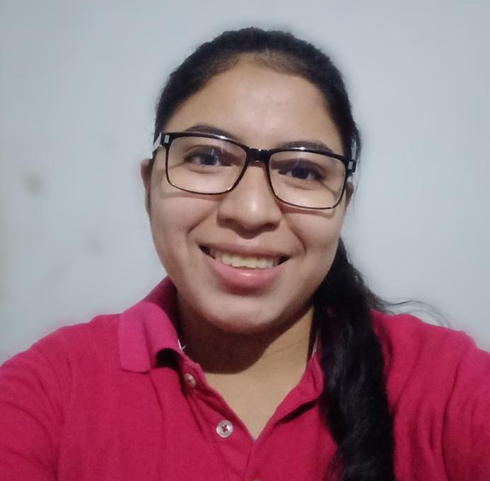

Nombre: Amanda Berenice Rodriguez Rivera, edad 24 años. Nuestra pagina web estuvo a cargo de 3 personas que tomaron nuestras ideas para crearla, primero tenemos a Amanda una joven que implemento sus conocimientos en el desarrollo de nuestra pagina web, conociendo un poco mas de ella podemos mencionar sus pasatiemmpos que serian ver peliculas de terror, pasar el tiempo con su familia, dibujar, salir con sus amigos, ademas trabaja como agente de soporte tecnico para computadoras y impresoras, divide su dia a dia en su trabajo y universidad tomando en cuenta las actividades que tiene que realizar cada dia.
Amanda estudiante de Tecnico en Ingenieria en computacion, se encargo de la maquetacion en html de la pagina web, como parte de su trabajo creo la pagina Galeria y Contacto dandole las validaciones correctas a nuestro formulario, asi mismo se encargo del diseño de estas dos paginas.
Como segundo tenemos a Alejandro, con 26 años de edad le gusta el futbol, salir a correr, disfruta hacer deportes en su tiempo libre, su trabajo consta de vender sus artesanias creadas por el mismo, pero tambien le encanta crear paginas web para seguir aprendiendo como usar nuevas herramientas.
Alejandro colaboro en la parte del menu que tenemos en cada una de las paginas para que los cliente puedan ver el menu siempre y decidan que pagina quieren revisar, asi tambien se encargo de la pagina Acerca de, donde podemos ver informacion sobre el restaurante, mision y vision, para conocer las ideas que tienen a futuro para los clientes y asi mejorar su servicio.
Ultimo pero no menos importante tenemos a Daniel, un joven que es apasionado por la programacion, sus pasatiempos son crear paginas web sobre sus animes favoritos, ver animes, cocinar cuando dispone del tiempo sificiente, Daniel estuvo encargado de el pie de cada una de las paginas, ademas de agregar el enlace de Google maps en la pagina de Contacto, asi mismo creo la maquetacion y diseno de la pagina principal que es el Inicio, adicional a esto creo la pagina de Creadores para mostrar informacion de su grupo que estuvo a cargo de la creacion del sitio web.
Como parte de la pagina creadores esa seria la informacion sobre las personas encargadas en la maquetacion y diseño del sitio web, esperamos que todo sea de su agrado y quedamos atentos a cualquier comentario que se quiera compartir!!!